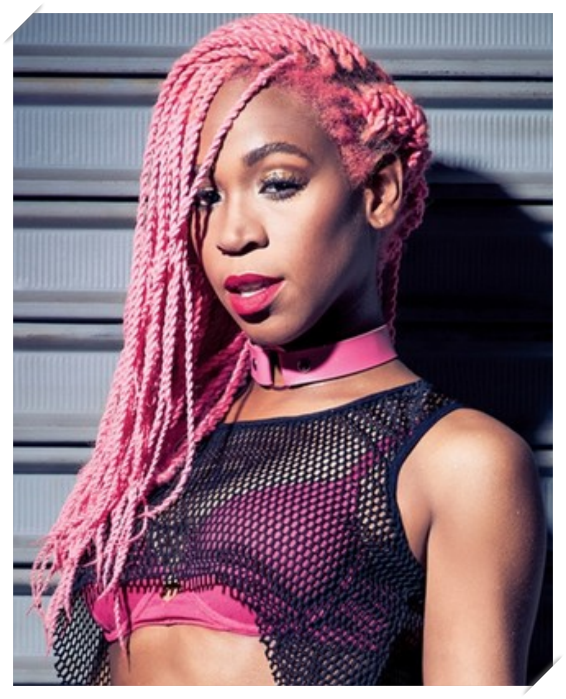
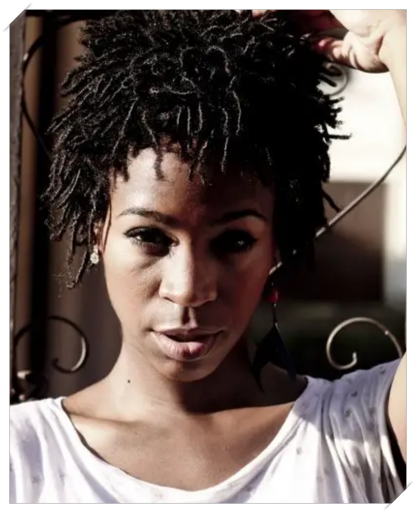
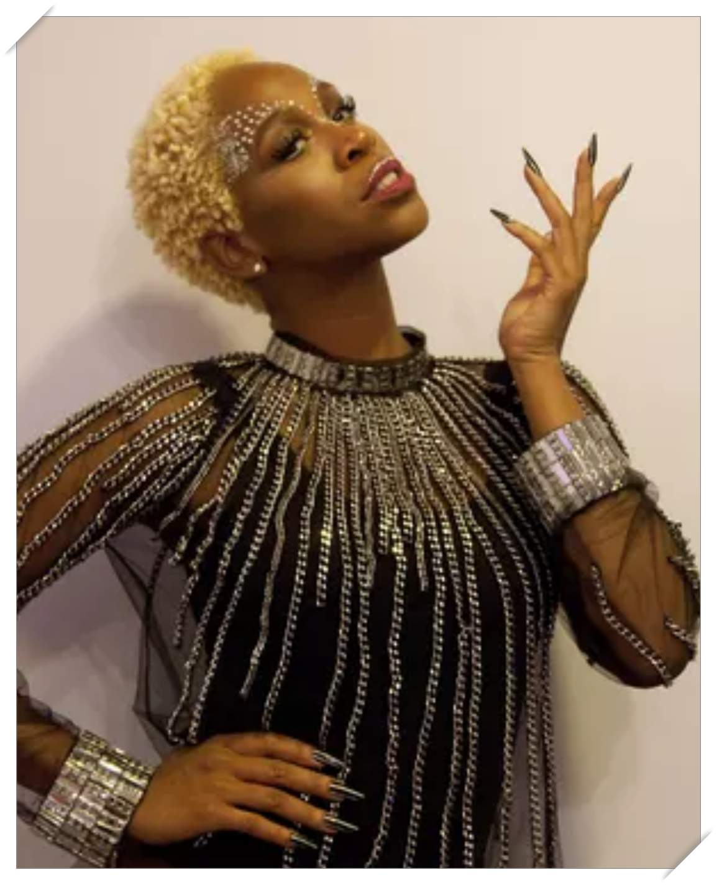
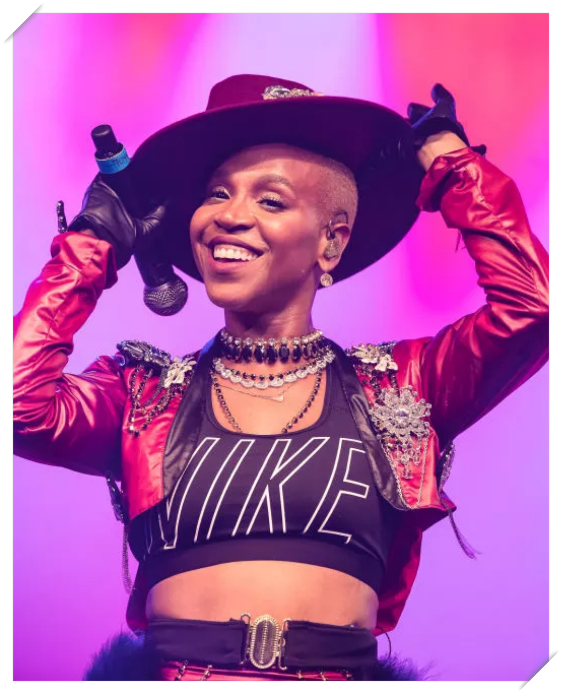

História Cancelamento Memes Top 10 músicas Redes Sociais Podcasts
Karoline dos Santos Oliveira nasceu em 1 de janeiro de 1986 em Curitiba, Paraná, sendo criada no bairro do Boqueirão. Seu pai, Odair, sofria de alcoolismo, e faleceu quando Karol tinha quatorze anos de idade. Quando criança, ela queria ser atriz de comédia e cantora de música popular brasileira, tendo também aulas de dança contemporânea, balé e teatro, e desde sempre foi adepta da escrita, muito inspirada por sua mãe, que escrevia poemas. Em 2002, aos 16 anos, desistiu da dança contemporânea e participou de um concurso musical em sua escola, sendo a única menina na categoria do rap. Depois disso, decidiu investir e se profissionalizar na área musical.
 Após conhecer MC Cadelis e Cilho, ambos formaram um quarteto chamado Agamenon, lançando um mixtape com sete canções. A partir disso, começaram a ficar conhecidos. Por dois anos se apresentaram como grupo Upground com Cadelis, Nairóbi, Mike Fort, São Nunca, Guerra Santa e Nel Sentimentum, promovendo-se com dois mixtapes. Seu nome artístico surgiu por influência do seu pai, que sempre falava para ela dizer que seu nome era "Karol com K e não com C". Decidiu passar para o papel, originalmente criando o "Conká".
 Em 2014, Karol lançou o single "Tombei", com participação do grupo Tropkillaz. A canção tornou-se sucesso absoluto, tornando seu nome mais conhecido no âmbito nacional. Com a faixa, a cantora venceu a categoria de Nova Canção no Prêmio Multishow de Música Brasileira 2015, sendo também indicada a duas outras categorias, e ainda se tornou tema de abertura do seriado Chapa Quente, em 2016, estrelada por Ingrid Guimarães e Leandro Hassum. Em abril de 2014, Karol Conka apareceu na lista “Dez novos artistas que você precisa conhecer” da revista Rolling Stone (EUA). No fim de 2015, lançou a canção "É o Poder", através do selo Buuum, da Skol Music. Em 5 de agosto de 2016, Karol participou da cerimônia de abertura dos Jogos Olímpicos de Verão de 2016, cantando "Toquem os Tambores" ao lado de MC Soffia. Em outubro do mesmo ano, lançou a faixa "Maracutaia".